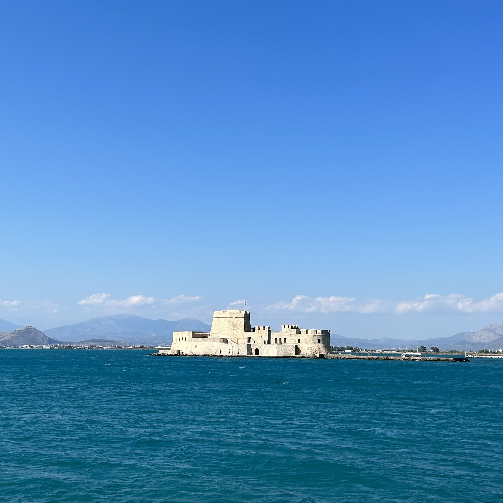

Mycenae, Nauplion & Epidaurus
Step Inside the History and Legends of Mycenae, Nafplion & Epidaurus.

Step Inside the History and Legends of Mycenae, Nafplion & Epidaurus.
10-12 hours
Walking Tour
Custom pick-up




Explore the highlights of Mycenae, Epidaurus & Nauplion.
Discover the heart of the Argolis region in the Peloponnese on this full-day journey that seamlessly weaves together legendary tales, historic grandeur, and breathtaking landscapes.
Begin your adventure at Mycenae, a cradle of early Greek civilization and the legendary home of King Agamemnon. Walk through the iconic Lion Gate, the monumental entrance to the ancient citadel, and step back into a world of myth and power. Explore the royal tombs and gaze upon the massive cyclopean walls—testaments to a civilization that has endured for over three millennia. Nearby, the Treasury of Atreus awaits, a monumental beehive tomb renowned for its architectural mastery.
From the echoes of Bronze Age glory, travel to Nafplion, the romantic neoclassical seaport that served as the first capital of modern Greece. Stroll through its charming Old Town, where Venetian architecture blends with marble-paved squares and vibrant cafés. Admire the sea views framed by the fortress of Bourtzi and the imposing Palamidi Fortress perched above the city, symbols of Nafplion’s rich history and strategic importance.
After a relaxing lunch soaking in the coastal atmosphere, continue inland to the ancient sanctuary of Epidaurus, celebrated for its magnificent 4th-century BCE theater. Renowned as the most acoustically perfect ancient theater in the world, it once hosted performances honoring both gods and humanity. Nearby, explore the Sanctuary of Asclepius, a spiritual and healing center where pilgrims sought medical treatments from across the Greek world.
Explore the Lion Gate, Royal Tombs, Cyclopean Walls, and the Treasury of Atreus.
Stroll through the Old Town, admire the Bourtzi Fortress, and visit the Palamidi Fortress.
Visit the Ancient Theater of Epidaurus and the Sanctuary of Asclepius.
Entrance fees to venues
Private licensed guide
If you have any questions or would like to book this tour, feel free to reach out:
Email: greecelocalguide@gmail.com
Phone: +30 6942919085